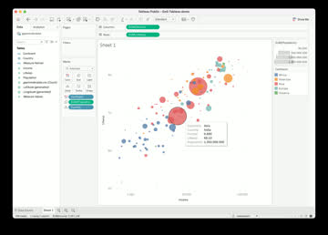
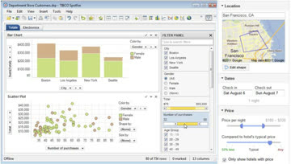
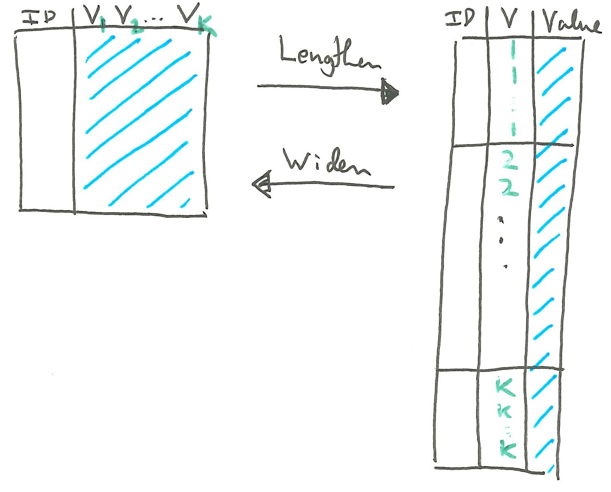
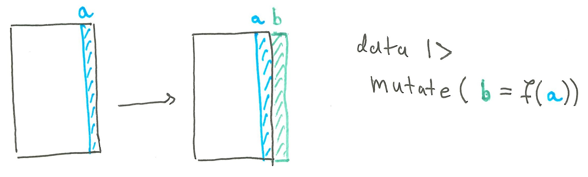
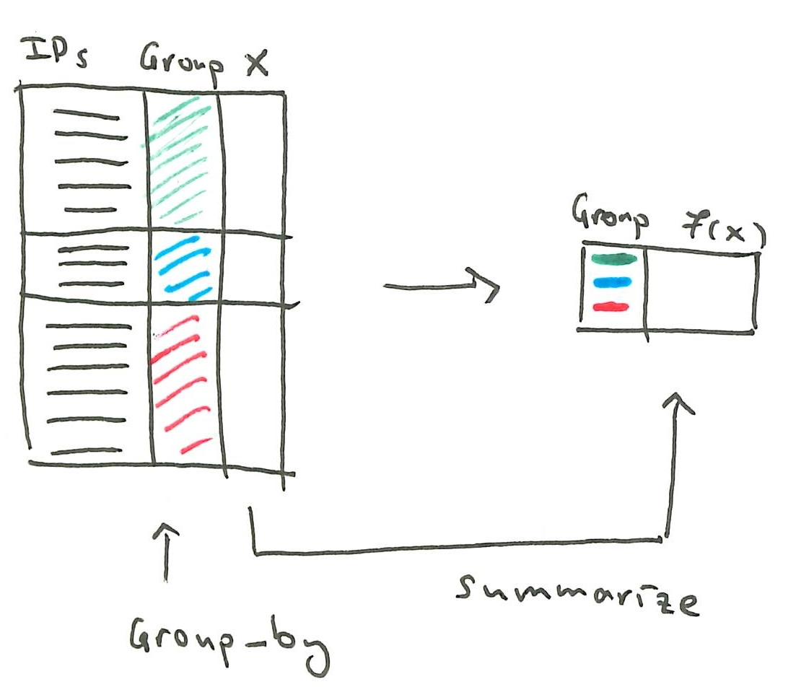
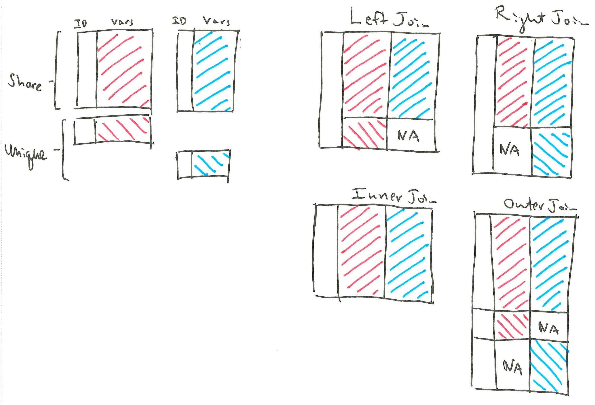

Midterm Review
Exam Tips
The exam covers the six weeks of material. Expect roughly one problem per week.
The first few problems will be multiple true/false. No justification is needed. Think of these as a warm-up.
The last few problems will be more challenging. Make sure you give yourself enough time for solving these. You can get partial credit for answering any subproblem, and they can be answered independently of one another
You do not need to write much in your response to get full credit. In our solutions, one to two sentences are enough for almost every part. Use lists and draw tables to organize your answers. This will allow you to make steady progress without feeling rushed.
Try not to rely too much on your cheat sheet. If there’s a detail that might take time to look up on your sheet, consider skipping that part and coming back to it at the end.
Interactivity
Interaction Taxonomy
The two main takeaways of the interaction taxonomy notes are:
- Not all interactive visualizations are the same. We need to be precise about the purpose of user interactions and how they are implemented.
- There are only a few common interaction patterns in practice. One common breakdown (and the one used in our reading) appears below.
rootdata and view
specificationvisualize
Decide on a set of visual encodings.filter
Modify which samples are shown.sortReorder where the samples appear on the display.deriveIntroduce new variables to the display.view
manipulationselectSelect items to focus or operate on.navigateNavigate the view to a region of interest.coordinateCoordinate interactions across related panels.organizeOrganize views into an easier to understand layout.analysis process
and provenanceTo evaluate whether an interactive visualization is good, you can use these principles,
- The gulfs of interaction.
- Execution \(\to\) How long does it take to specify a query and update the display?
- Evaluation \(\to\) How long does it take to understand the updated display?
- Eyes beat memory. Compared to small multiples, interactive visualizations have a higher cognitive load but take up less space.
- Object constancy. Any animated transitions should track the same object.
- The gulfs of interaction.
Mosaic
To read Mosaic code, I answer these questions in order:
- What is the overall arrangement of plots or interface elements? I would deliberately ignore anything that seems like stylistic customization.
- Ignoring interactivity, what are the data, marks, and graphical encodings in each?
- What user inputs are available? Are they outside the plot (e.g., sliders) or built directly into the plot (e.g., brush)?
- What
ParamorSelectionvariables are used to store the user inputs? - How does the plot responds to those user inputs?
After I’ve walked through this, I should be able to explain what the plot shows and how information flows from the user making an input to the plot updating in response. For concreteness, let’s consider this example.
filter = vg.Selection.intersect() species_menu_3 = vg.menu({as: filter, from: "penguins", column: "species", label: "Species"}) island_menu = vg.menu({as: filter, from: "penguins", column: "island", label: "Island"}) species_island_plot = vg.plot( vg.dot( vg.from("penguins"), {x: "bill_length_mm", y: "bill_depth_mm", fill: "species"} ), vg.highlight({by: filter, opacity: 0.1}), vg.xDomain([30, 60]), vg.yDomain([12, 22]), vg.width(500), vg.height(300) ) vg.vconcat([vg.hconcat([species_menu_3, island_menu]), species_island_plot])For the overall arrangement, I see whether there are any
vg.hconcatorvg.vconcatcalls. Whatever is in the arguments of these functions will be the main inputs or visualization panels of the plot.For the data, marks, and graphical encodings, I look for layers like
vg.dot(scatterplots),vg.bar(bar plots), orvg.line()(line plot). The name of the layer itself specifies the mark. Its first argument specifies the data, and the second argument, a kind of dictionary (between{}symbols, like{x: "var1", y: "var2"}), specifies the graphical encoding.To work through the last few steps, let’s briefly review how mosaic handles interactivity. The interactivity code has three jobs,
- Read in user inputs.
- Store the user inputs.
- Update the visualization based on user inputs.
The reason things get complicated is that in real world interactive visualizations there are many ways to do each step. But there are a few common patterns that tend to appear again and again, and Mosaic provides shorthand for implementing those patterns.
To read in user inputs1, Mosaic provides either Inputs or Interactors.
- Inputs are elements on the user interface outside the plot. These are the inputs that appear in the “Interactive Visualization – Part 1” notes.
- Interactors read in input by directly interacting with the plot. These appeared in the “Interactive Visualization – Part 2” notes.
When reading code to answer the fourth question, I would scan the code outside the marks layers, to see if any Inputs are present:
vg.menu,vg.slider,vg.search,vg.table. Then I would scan the code inside the marks layers to see if any interactors are present:vg.interval*,vg.toggle*,vg.nearest,vg.panZoom.ParamandSelectionvariables are used to store the user inputs.Params update the graphical marks directly, without ever referring to particular rows of the data. E.g., it could be used to set the size or color of all the points. Selections form a query related to the underlying dataset and tells us which rows are selected by that query. E.g., it can be used to find all the Airbnbs that are below a certain price.Here is an example problem I was considering putting on the midterm,
For each of the situations below, circle whether a mosaic
ParamorSelectionapplies. You may select one, both, or neither in each part.- PARAM SELECTION You plan to overlay a 2D density on a scatterplot and would like a slider that allows the user to adjust the bandwidth.
- PARAM SELECTION You want to create a scatterplot of column A vs. column B in a dataset, where both A and B are selected through separate drop-down menus.
- PARAM SELECTION A scatter plot shows daily maximum temperature across the year, and a bar plot shows the number of sunny, rainy, and snowy days. Clicking a bar filters the scatter plot to days with that weather type.
- PARAM SELECTION Brushing a scatterplot of Airbnb rental locations updates a table displaying details of each property.
In all our examples, we declare these variables at the very start. The variables appear in both the inputs (e.g.,
vg.menu) and the layers that implement the response (e.g.,vg.highlight, discussed below). When I’m reading the mosaic part, I would look for these “storage” variables in both places. This tells me how the variable keeps track of the user input and passes it along to update the view.A subtlety with
Selectionis that different user inputs can conflict with each other. For example, the brush might select one region in the map, and a menu might select only the one-room rentals. To reconcile the conflicts, mosaic requires us to specify whether the selection is avg.Selection.intersect(),vg.Selection.union(), orvg.Selection.single().For how the plot responds, it depends on whether the input was a
ParamorSelection. If it was a Param, we directly manipulate the graphical encoding inside the{}symbols.color = a Param object vg.plot( ... vg.dot( // dataset goes here, {x: "var1", y: "var2", fill: color} // graphical encoding depends on Param ) )If it was a Selection, we can either filter the dataset or highlight the samples. This is the filtering approach.
current_rentals = a Selection object vg.plot( ... vg.dot( vg.from("rentals", filterBy: {current_rentals}) // graphical encoding goes here ) )This is the highlighting approach.
current_rentals = a Selection object vg.plot( ... vg.dot( // dataset goes here // graphical encoding goes here ), vg.highlight({by: current_rentals}) )In the three examples above, I haven’t written the Input or Interactor that is used to update the storage variable. I’ve tried to focus on just the parts relevant to the visualization’s response to the input, but the real code would need these ways of reading in input and updating the
ParamorSelection.Let’s practice working through these steps with this more involved example from the notes.
weather_type_v3 = vg.Selection.single() months_v3 = vg.Selection.intersect() vg.vconcat( vg.plot( vg.dot( vg.from("weather", {filterBy: weather_type_v3}), { x: vg.dateMonthDay("date"), y: "temp_max", fill: "weather", r: "precipitation" } ), vg.intervalX({as: months_v3}), vg.highlight({by: months_v3, fill: "#ccc", fillOpacity: 0.2}), vg.colorLegend({as: weather_type_v3}), vg.xyDomain(vg.Fixed), vg.colorDomain(domain), vg.colorRange(colors), vg.rDomain(vg.Fixed), vg.rRange([2, 10]) ), vg.plot( vg.barX( vg.from("weather"), {x: vg.count(), y: "weather", fill: "#ccc", fillOpacity: 0.2} ), vg.barX( vg.from("weather", {filterBy: months_v3}), {x: vg.count(), y: "weather", fill: "weather"} ), vg.toggleY({as: weather_type_v3}), vg.highlight({by: weather_type_v3}), vg.xDomain(vg.Fixed), vg.yDomain(domain), vg.yLabel(null), vg.colorDomain(domain), vg.colorRange(colors) ) );
Data Management
You should be able to explain whether or not a dataset is tidy. If it’s implicitly storing variables in the column names, then it is not tidy. If it’s storing two types of variables within a single column, then it’s also not tidy.
There were a few kinds of operations we used to make data tidy for visualization. You should be able to explain conceptually what they do and also combine them in the necessary ways to transform data.
These are the main operations you should know.
- Pivoting wider spreads one column into many different columns. Pivoting longer stacks many columns into one and introduces a new variable to explicitly track what had been implicitly stored in the column names. They are implemented in the
pivot_widerandpivot_longerfunctions, respectively.

- Deriving a column introduces a new column based on existing columns. This is implemented by
mutate. Aggregation replaces a column (or columns) with group-level summary statistics. This is implemented by thegroup_byandsummarizefunctions placed one after the other. The output has one row per group.


Filtering keeps only the rows based on the data value. Selecting keeps only the columns based on their name.
Joining merges two tables into one using the variables that are shared across them. Since an ID could be present in only one of the two tables, we needed different types of join (
left_join,right_join,full_join,inner_join).

- Pivoting wider spreads one column into many different columns. Pivoting longer stacks many columns into one and introduces a new variable to explicitly track what had been implicitly stored in the column names. They are implemented in the
The skill I want to make sure you’ve developed is that you can recognize how the transformations can be applied in a sequence to achieve a desired data format. I’ve modified one of the exercises from our exercise sheet to deprioritize writing code from scratch and instead emphasize noticing the types of transformations that are needed.
The dataframe
dfcontains the habits of readers in a hypothetical reading group. Each row is one book read by one reader. For each part, describe how to transform the data from the Before to the After format. Clearly indicate if it requires multiple steps. Your answers can be very brief (e.g., “step 1. filter to rows with rating above 3”). Each part is independent of the others.- Total pages read by each reader within each genre.
Beforeperson_id genre pages_read days_taken rating 501 Mystery 300 12 4 501 Mystery 240 6 5 501 Sci-Fi 350 10 3 501 History 280 14 2 502 Sci-Fi 400 8 5 502 Sci-Fi 150 10 4 502 History 330 15 3 502 Mystery 210 7 4 Afterperson_id genre total_pages 501 History 280 501 Mystery 540 501 Sci-Fi 350 502 History 330 502 Mystery 210 502 Sci-Fi 550 - Reading pace for each book.
Beforeperson_id genre pages_read days_taken 501 Mystery 300 12 501 Mystery 240 6 501 Sci-Fi 350 10 501 History 280 14 502 Sci-Fi 400 8 502 Sci-Fi 150 10 502 History 330 15 502 Mystery 210 7 Afterperson_id genre pages_read days_taken pace 501 Mystery 300 12 25 501 Mystery 240 6 40 501 Sci-Fi 350 10 35 501 History 280 14 20 502 Sci-Fi 400 8 50 502 Sci-Fi 150 10 15 502 History 330 15 22 502 Mystery 210 7 30 - Each reader’s average rating in each genre.
Beforeperson_id genre pages_read days_taken rating 501 Mystery 300 12 4 501 Mystery 240 6 5 501 Sci-Fi 350 10 3 501 History 280 14 2 502 Sci-Fi 400 8 5 502 Sci-Fi 150 10 4 502 History 330 15 3 502 Mystery 210 7 4 Afterperson_id History Mystery Sci-Fi 501 2 4.5 3.0 502 3 4.0 4.5
Color
There were three main parts in this lecture,
- We introduced RGB and HSL color spaces. This helped us understand what color is and how it’s represented in a computer.
- We defined color maps, reviewed different types of color map, and pointed to functions that can be used to implement them.
- We went over some best practices. These are recommendations from the literature that we can use to improve upon ggplot2 defaults.
Color spaces are numerical representations of color. RGB represented color as a mixture of red, green, and blue components. When you enter strings like “#F00000” in code, that is the RGB representation. HSL represented color using hue, saturation, and lightness. This was useful for making sense of color wheels. We had two diagrams to summarize these color spaces.


An important aspect of HSL representation is that saturation and luminance are naturally perceived as being ordered. Hue is not, which is why when using it to encode data (rainbow palettes) it requires more cognitive effort.
Color maps are ways of mapping data attributes to color. We could organize them according to (i) the data that they’re supposed to encode and (ii) the mapping from the data to the color space. These are all the color maps that we discussed. The first are more important because even if we only have them, we can cover all the Types, Directions, and Continuity options. The rest are nice presets provided by the community, but they are not as essential to recognize.
Function Type Direction Continuity Package Example scale_color_manualCategorical NA NA ggplot2 scale_color_gradientOrdered Sequential Continuous ggplot2 scale_color_stepsOrdered Sequential Stepped ggplot2 scale_color_gradient2Ordered Diverging Continuous ggplot2 scale_color_steps2Ordered Diverging Stepped ggplot2 scale_color_brewerCategorical NA NA ggplot2 scale_color_viridis_cOrdered Sequential Continuous ggplot2 scale_color_viridis_bOrdered Sequential Stepped ggplot2 scale_color_distillerOrdered Sequential Continuous ggplot2 scale_color_fermenterOrdered Sequential Stepped ggplot2 scale_color_scicoOrdered Depends Continuous scico bi_scale_colorOrdered (two variables) Neither, bivariate Stepped biscale There were many best practices, but the one that comes up the most in practice is that we should not use too many colors in categorical color maps. The maximum recommended ranged from 6 to 12, though it depended on details like how much space the color marks take up. The two solutions we discussed were either (i) coarsen the categories so that there are fewer of them or (ii) lump the rare categories into an “other” category.
We discussed that there are different forms of color blindness and that they make several points in a color space appear equivalent. We mentioned that there are both R functions and online resources to see how color palettes appear under each of these forms of color blindness, so that color maps can be chosen which will not be ambiguous to colorblind readers.
Footnotes
It’s a bit confusing at first, but interactors are still a type of input.↩︎